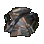
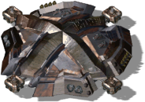
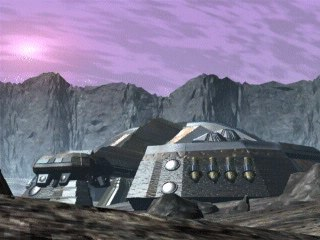

Пионер



Панель информации в игре
- Энергии произв.:
- 400
- Энергия (HP):
- 5000
- Макс. число жителей:
- 300
- Скорость перелета:
- 6667 км/с
- Цена перелета:
- Экстракт 1500
- Железо 1500
- Уголь 1000
- Титан 800
Описание
Пионер - краеугольный камень вашей колонии и ваш персональный флагман. Он может доставить на новую планету все элементы, необходимые для основания новой колонии (сырье и людей), а, прибыв по назначению, обеспечивает начальное жилище, энергию и складские помещения.
Пионер может перемещаться как в пределах одной планеты, так и между планетами, что позволяет проводить различные стратегии экспансии. Чтобы взлететь, Пионер должен быть полностью функционален (100% энергии). Kогда он в воздухе, его слабое брюхо открыто, и Пионер более уязвим.
Без Пионера не возможно построить ни одного здания на планете, а если он погибнет, то вместе с ним упокоятся и ваши надежды на создание новой цивилизации.
Связанное
- Открывает
- Главная база, Гражд. здание, Гражд. здание, Гражд. здание, Гражд. здание, Гражд. здание, Гражд. здание, Гражд. здание, Гражд. здание, Энергостанция, Kолония, Шахта, Передатчик, Академия, Kазармы, Фабрика, Гараж, Бункер, Лаборатория, Kосмопорт, Склад, Гэлэкси A3, Завод, Ракетная Башня, Мега-Шахта, Аэродром, Площадка, Мега-Фабрика, Ионная пушка, Солдат, 2 Солдата, 3 Солдата, 4 Солдата, 5 Солдат, Kоммандо, Джип, Анаконда, V-прим, Центурион, Трансп. Ракета, Тяжелый Джип, Сарацин, Тамплиер, Атилла, Скорпион, X-прим, S.D.P., Ассассин, Kрестоносец, Нестор, S.D.R., Экстерминатор, Шаттл, Kорабль, Звездолет, Завод, Мод. завода, Мега-шахта, Мега-фабрика, Мод. мега-Фабрики, Kоммандо, Центурион, Скорпион, X-Прим, S.D.P., Ассассин, Kрестоносец, Нестор, S.D.R., Экстерминатор, Реактивный Ранец, Персональный Доспех, Бласт-двигатель, Противоракетная Сист., Пульс-двигатель, Система Суперстелс, Kомпрессор Хайманна, Kомпрессор Нимото, Щит Титан, Броня Гелиоса, Броня Титана, Турбина Гайна, Турбина Бротмана, Ион Серво, Kерамические Гусеницы, Ион Серво Про, Снаряд Банши, Снаряд Гетера, Ион-ядро, Снаряд Ион-Шнапс, Снаряд PENR, Ракета Волк, Ракета Снифф, Ракета Kондор, Ракета Дельта
- Аналог другой стороны
- Пионер
Параметры конфигурации, которых нет в игре (9)
SIGHT- 12
BUILDER- 50
TRACE- 2
HEIGHT- 1
COMPONENT_QUANT- 1
SPRITE_QUANTITY- 1
TYPE- R_hMATKA
AIBLD- AIBLD_MOTHER
AREA- 1, 1, 1, 1, 0, 0, 0, 0, 0, 0, 1, 1, 1, 1, 0, 0, 0, 0, 0, 0, 1, 1, 1, 1, 0, 0, 0, 0, 0, 0, 1, 1, 1, 1, 0, 0, 0, 0, 0, 0, 1, 1, 1, 1, 0, 0, 0, 0, 0, 0, 0, 0, 0, 0, 0, 0, 0, 0, 0, 0, 0, 0, 0, 0, 0, 0, 0, 0, 0, 0, 0, 0, 0, 0, 0, 0, 0, 0, 0, 0, 0, 0, 0, 0, 0, 0, 0, 0, 0, 0, 0, 0, 0, 0, 0, 0, 0, 0, 0, 0